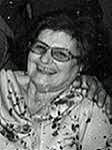

fiche familiale
*******************************************************************************
David Piché [Pichette]
Père: Hormidas Pichette
Mère: Mélina Schnobb
Mariage: 9 août 1910 à Ste-Cécile de Masham (La Pêche)
Épouse: Georgiana Renaud
Naissance le 28 avril 1888
Décès: avant 1970
Père: Joseph Renaud
Mère: Phélonise-Phélonie Coderre
*******************************************************************************
|   |
Enfant 1 Rita Piché décède à l'âge de 89 ans. Naissance le 1 jul 1911 à Hull Décès le 10 déc 2000 à Hull Sépulture au cimetière Notre-Dame de Hull (ses ancêtres) Mariage le 26 nov 1934 à Cathédrale d'Ottawa Conjoint: Liguori Beaudoin n. 14 août 1908 d. 1 avril 1970 (sa famille) |
Enfant 2 Lucille Piché
Mariage le 1 jun 1936 à Lavigne, cté Nipissing ON
Conjoint: Wilfrid Roberge
-------------------------------------------------------------------------------
Enfant 3 Fleurette Piché
Mariage le 11 oct 1941 à Kirkland Lake, cté Timiskaming ON
Conjoint: Jules Coutu
-------------------------------------------------------------------------------
Enfant 4 Marie-Laure Piché
Mariage le 25 mai 1942 à Lavigne, cté Nipissing ON
Conjoint: Oscar Lavallée
-------------------------------------------------------------------------------
Enfant 5 Annette Piché
Mariage le 14 oct 1943 à Lavigne, cté Nipissing ON
Conjoint: Joseph-Conrad Roberge
-------------------------------------------------------------------------------
Enfant 6 Gérard Piché
Mariage le 2 aoû 1950 à Cache Bay, cté Nipissing ON
Conjointe: Laura Arcand
-------------------------------------------------------------------------------
Enfant 7 Gabrielle Piché
26 déc 1960 à Sturgeon Falls, cté Nipissing ON
Conjoint: Raymond McMurray
*******************************************************************************
| Début de la page | Page précédente | Page des ancêtres | Page d'accueil |